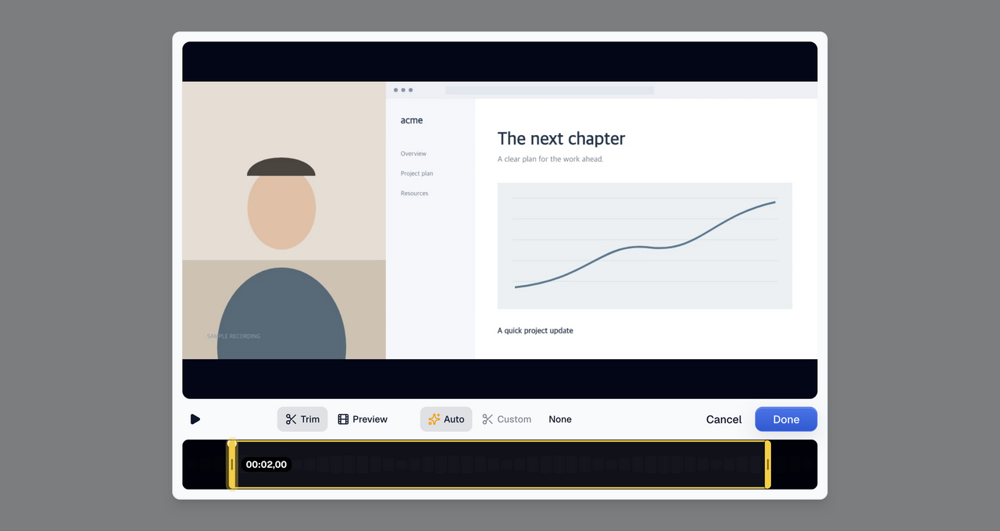
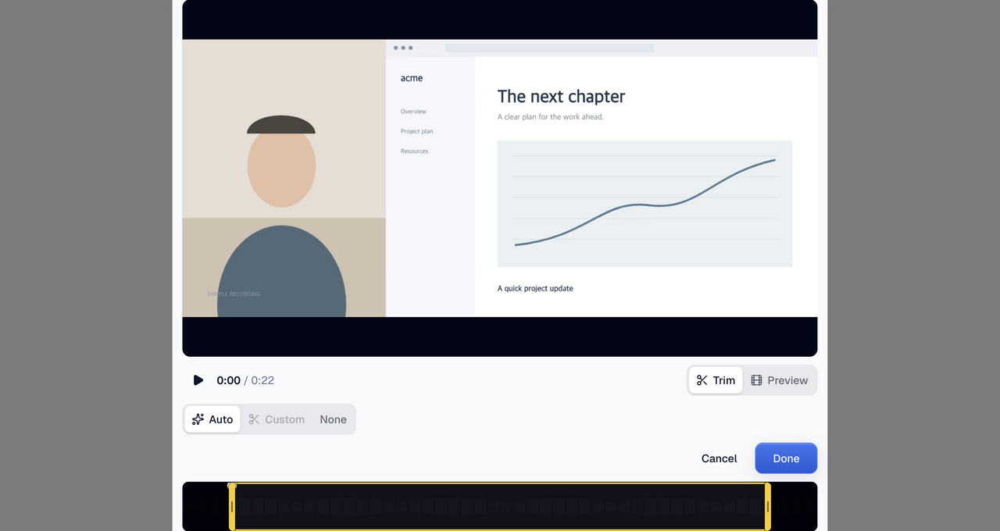
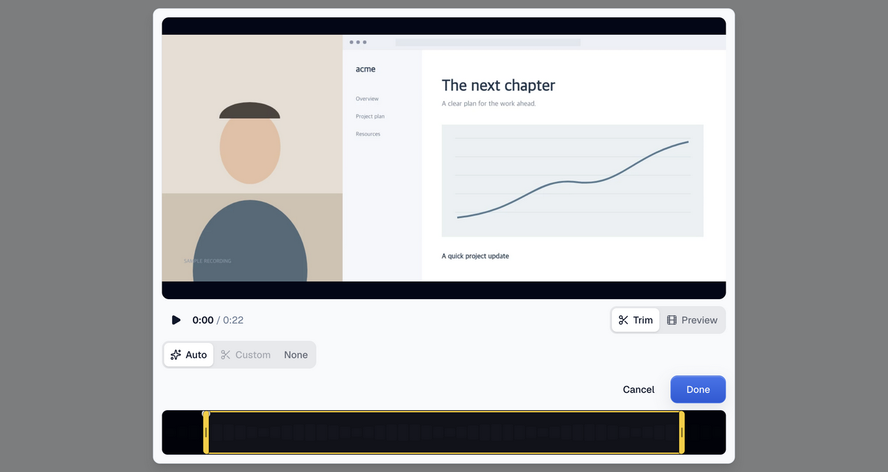
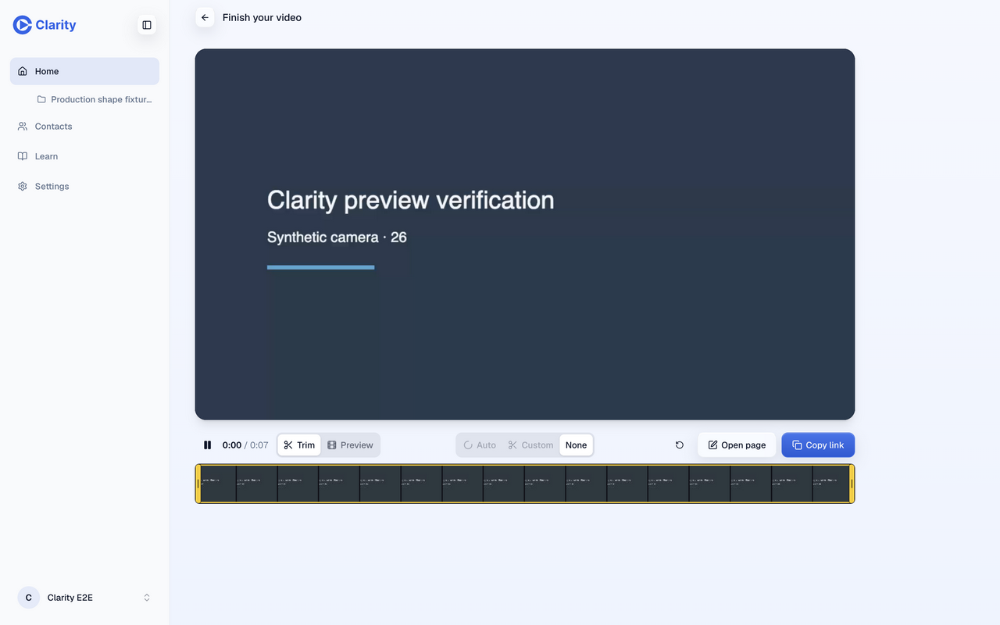
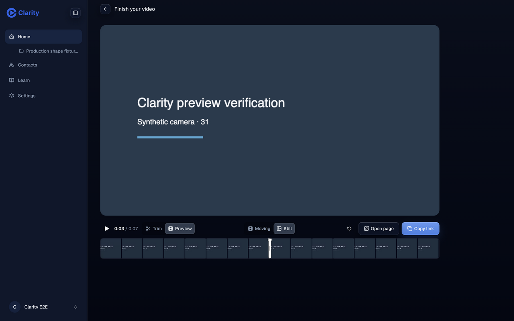
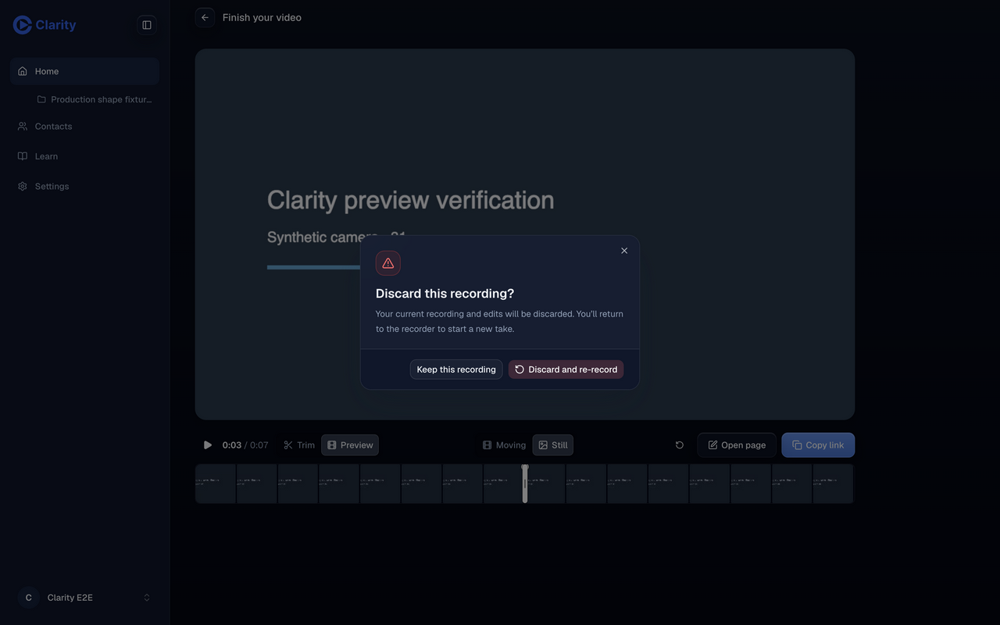
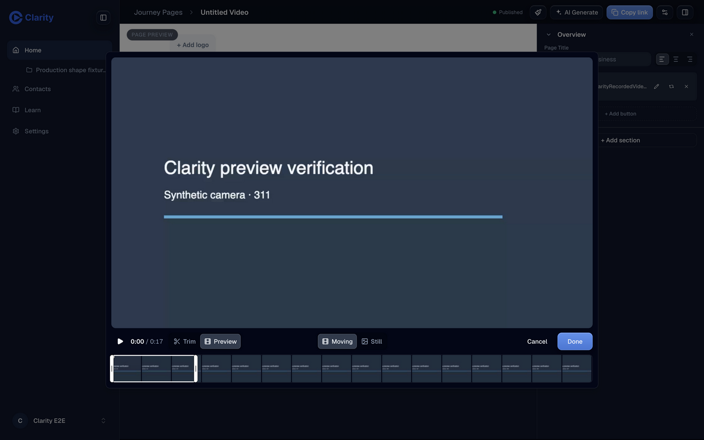
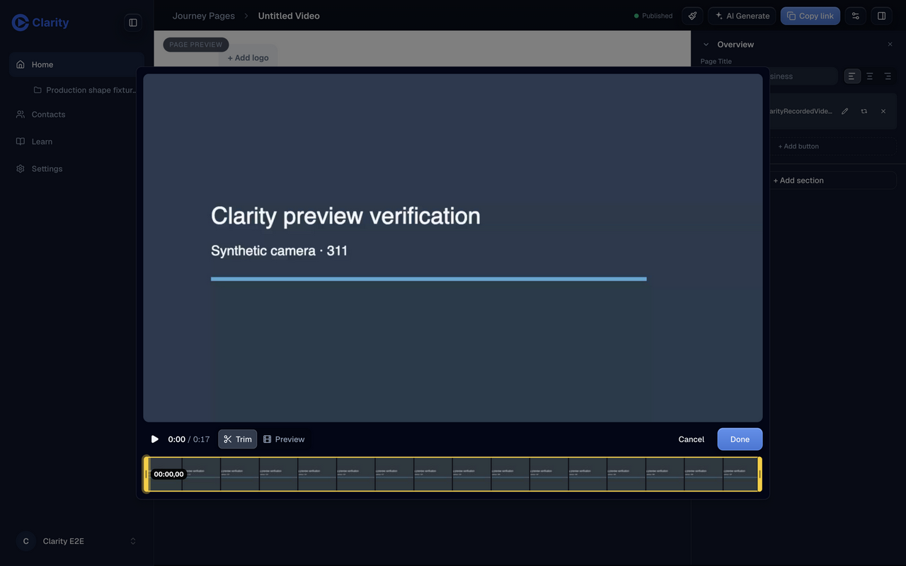
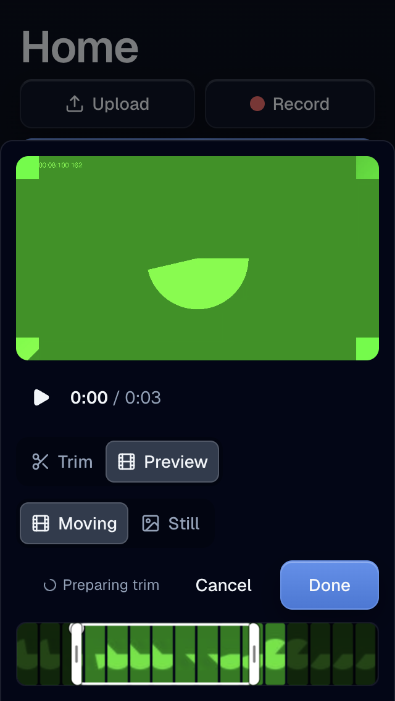

Pull request 1366 · PR preview · Interactive recording and dialog comparison
| Result | Check | Evidence |
|---|---|---|
| Pass | Shared components | Recording uses VideoEditor. Library and page editor share VideoEditModal, which uses the same VideoEditor. All editor choices use SegmentedControl. |
| Pass | Clock | Base clock fades to opacity 0 after a held trim. Preview clock remains at opacity 1 after 950 ms in both independently exercised dialogs. |
| Pass | One row and sizing | Desktop choices are centered. Outer control heights are 40 px; inner segments are 34 px with a 3 px inset. Radii are 10 px and 7 px. Default controls elsewhere remain 32 px. |
| Pass | Themes | Light and dark previews have shared track and thumb tokens. White filmstrip edge fades are removed. |
| Pass | Discard confirmation | Re-record preserves the take behind a confirmation. Keep this recording gets initial focus. Cancel keeps the take and edits. Confirm alone returns to the recorder. Independently repeated. |
| Pass | Actual journeys | Synthetic camera media was recorded and uploaded through real APIs. Copy link changed to Copied. Open page opened the generated page. Its Edit video action opened the shared dialog. |
| Pass | Persistence | Independent library check: Still + Cancel leaves stored metadata unchanged. Still + Done persists after a full page reload. Fixture restored to Moving. |
| Pass | Responsive bounds | Actual mobile dialog fits 320 × 568 without horizontal overflow. Local landscape and portrait fixtures fit 1280 × 680 after fixing clipping. |
| Pass | Before/after test | Discard confirmation test fails on base 59fe1e59 because discard fires on the first click; passes on the branch. |
| Pass | Local checks | All 3,314 editor tests, editor typecheck, scoped lint, build, CSS budget and diff check. Three public route smoke tests and the full critical journey pass on the deployed preview (22.8 seconds). |
| Pass | Deployed head | Signed-in doctor and independent checker confirm 418c84caee08bea5d1d03c99c788cc08bd68ab2d. PR preview workflow37634626673 passes. |
| Pass | Independent reviews | Comment cleanup, structure review, final review, runtime confirmation and artifact audit completed. Two critical-flow selectors updated to the new radio semantics. |
| Warn | Existing warnings | Bundle size warning, existing animation utility lint notices and test-type baseline of 207 errors at budget. Security scan candidates are unchanged decorative public images. |
| Warn | Legacy seed | A legacy trimmed fixture remains in Preparing trim because its seed lacks source-span resolution metadata. Persistence was verified on a working import fixture. This change does not alter that backend path. |
| Info | Media telemetry | Frontend controls only. No media worker or ingest pipeline changes. Actual upload, playback and edit API behavior was exercised. |
Local synthetic fixture, real components and generated app CSS. Hold Trim start for 900 ms. Base and branch use the same mock media. These images show the regression; deployed evidence follows below.

The confirmation test fails on the base with “expected discard not to be called; called 1 time.” The same test passes on the branch.








Signed-in doctor confirms the deployed commit and a valid identity. Real upload allocation returned 201, registration returned 200, and edit requests returned 202. Library metadata was re-fetched after save and after reload. No failed application requests occurred after login in the recording run. The independent check logged a browser aria-hidden focus warning during a modal transition and a camera permission warning before the synthetic device was installed. Initial 401 responses occurred before login. One streaming upload request was aborted at Stop, followed by successful finalization and playback. Background browser animations were allowed to finish before measuring layout.
All published media is synthetic test content. Authentication details and signed media URLs are omitted. The interactive comparison has a Light/Dark switch for both contexts. It is a design board; the PR preview is the complete application.